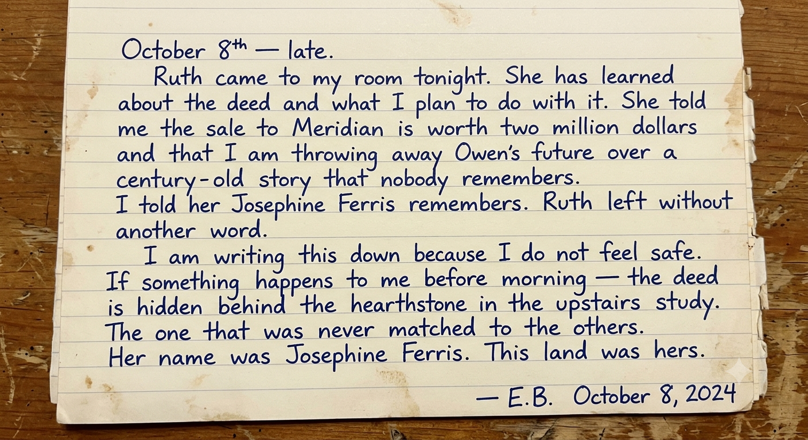
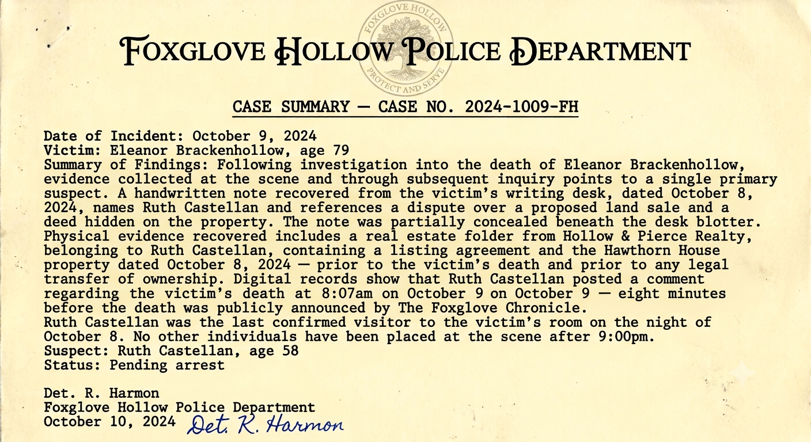
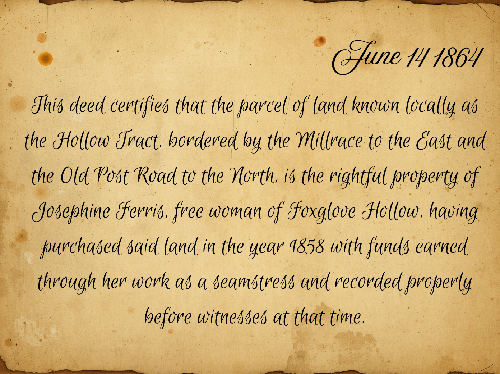
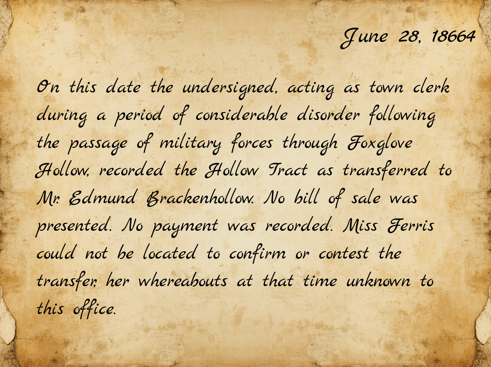
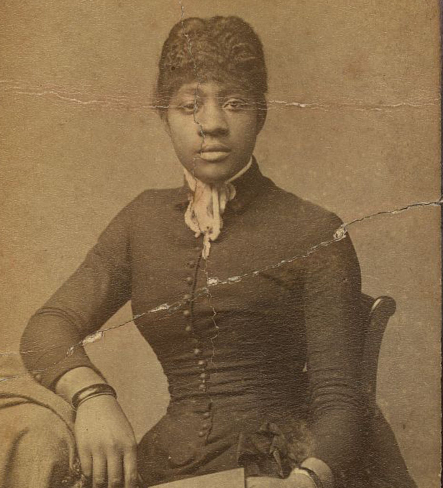
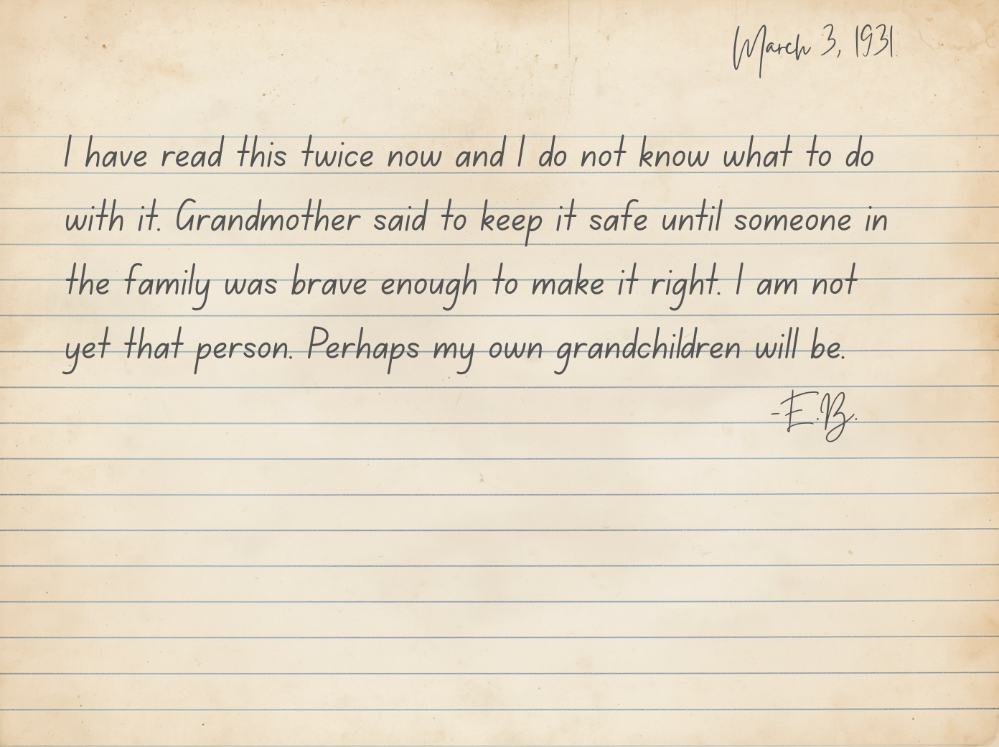

Two documents recovered from the scene. One written by Eleanor Brackenhollow herself. One by the detective who investigated her death.


The case is solved. Ruth Castellan killed Eleanor Brackenhollow on the night of October 8th.
Her motive: a $2,000,000 sale of Hawthorn House to Meridian Land Group — a deal that required Eleanor's silence about the deed hidden in the upstairs study.
Eleanor refused to stay silent. Ruth made sure she couldn't speak.
Eleanor's final act was to write it all down — and hide the truth where only someone who cared enough to look would find it.
You found it. Josephine Ferris's story can finally be told.
Wrapped in oilcloth, brittle with age. Hidden behind the hearthstone in the upstairs study. This is what Eleanor died to protect.



Josephine Ferris purchased the Hollow Tract fairly in 1858, earned through her work as a seamstress. She disappears from Foxglove Hollow's records entirely after June 1864. Her whereabouts were never confirmed.

A single torn page, water-stained, listing household accounts from the Brackenhollow family in the years following 1864. Most entries are unremarkable: feed, repairs, wages. One entry, near the bottom, has been underlined twice.
You decoded the cipher. You found the deed. You gave Josephine Ferris her name back. The investigation is complete.
Every investigator who solves the case earns a Cyber Sleuth Certificate of Achievement.
Enter your name and download yours below.
Or scan the QR code to go directly to the certificate page.